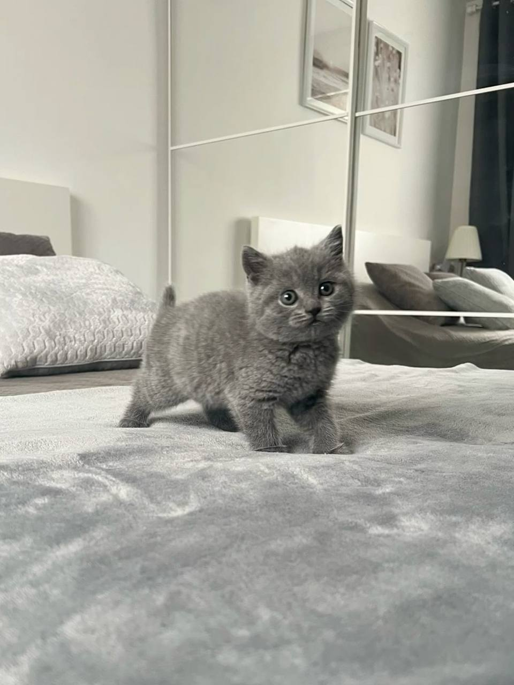

Обязанности по дому каждого кота
Каждый кот имеет свои обязанности, которые помогают ему поддерживать порядок и уют в доме. Вот некоторые из них:
- Кот должен отсыпаться за человека, всех его родственников, друзей и соседей вместе взятых.
- Кот должен защищать человека от комнатных растений.
- Кот постоянно должен поддерживать человека в форме, заставляя его непрестанно двигаться по квартире, нагибаться, собирая ручки, карандаши, носки и т. д.
- Кот должен крепко держать зубами ручку или карандаш, пока человек пытается писать.
- Кот постоянно должен проводить ревизию в холодильнике, даже если человек этого не хочет.
- Кот должен ночью каждый час проверять, не заползла ли под одеяло человеку какая-нибудь змея.
- Кот время от времени должен тренировать себя на случай непредвиденного циркового выступления.
- Кот должен помогать человеку стелить постель, внимательно наблюдая, чтобы под простыней не оказалось никаких предметов.
- Кот должен помнить, что сон для человека – это пустая трата времени.
- Кот должен каждое утро напоминать человеку старую пословицу: «Кто рано встает, тому Бог дает».
- Кот должен делиться с человеком всем, что у него есть.
- Кот должен петь песни, чтобы доставлять человеку радость.
- Кот должен проверять, по какой причине кто-то не закрыл шкаф или тумбочку.
- Кот должен отгонять от человека плохие сны.
- Кот должен знать, что лежит во всех коробках и пакетах.
- Кот должен во время сна человека заглушать наружный шум, громко урча под ухом.
Почему коты важны?
Коты - это не просто питомцы. Они становятся частью нашей жизни и делают её ярче!

Ссылки на полезные ресурсы